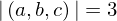
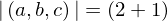

Show the Proof¶
In [1]:
import proveit
# Automation is not needed when only showing a stored proof:
proveit.defaults.automation = False # This will speed things up.
proveit.defaults.inline_pngs = False # Makes files smaller.
%show_proof
Out[1]:
| step type | requirements | statement | ||
|---|---|---|---|---|
| 0 | generalizaton | 1 | ⊢  | |
| 1 | instantiation | 2, 3, 4 | ⊢  | |
 : :  , ,  : :  , ,  : :  | ||||
| 2 | axiom | ⊢  | ||
| proveit.logic.equality.equals_transitivity | ||||
| 3 | instantiation | 5, 6, 7 | ⊢  | |
 : :  , ,  : :  , ,  : :  | ||||
| 4 | theorem | ⊢  | ||
| proveit.numbers.numerals.decimals.add_2_1 | ||||
| 5 | axiom | ⊢  | ||
| proveit.core_expr_types.tuples.tuple_len_incr | ||||
| 6 | theorem | ⊢  | ||
| proveit.numbers.numerals.decimals.nat2 | ||||
| 7 | instantiation | 8 | ⊢  | |
| : , : | ||||
| 8 | theorem | ⊢  | ||
| proveit.numbers.numerals.decimals.tuple_len_2_typical_eq | ||||